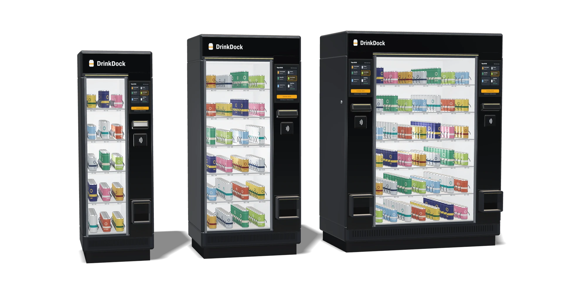
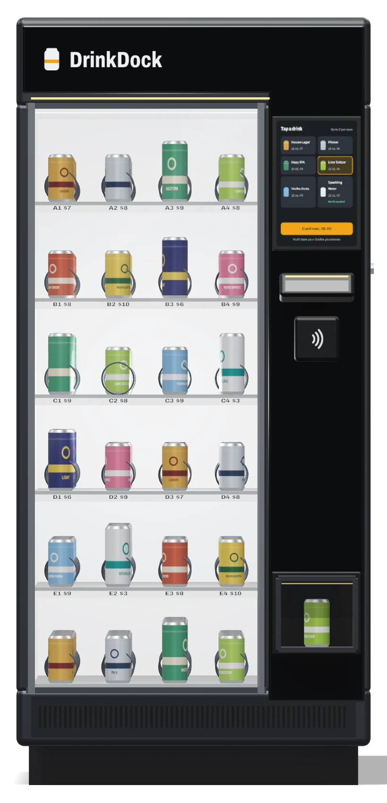

DrinkDock machines
Glass-front vending machines for canned and bottled drinks, with an ID scanner, tap-to-pay and a pickup port built in. Plug one in, stock it with what you already sell, and let simple orders serve themselves.
These are design specifications for our first pilot units, planned for 2027. Final specs will be confirmed before install, and images are design renders.

See it from every side
Our current design model. Drag to rotate.


1 2 3 4 5 6 7 8 9Every part, labeled
DrinkDock One, front view.
- Status light. Glows amber when a guest asks for help or staff pause sales, so the bar can see it from across the room.
- Glass door and trays. Six trays of four rows behind a locked door. Staff restock from the front.
- Row labels. A row code and price under every row, matching the screen.
- Touchscreen. 15.6 in, with a camera in the bezel above it for the photo match.
- ID scanner. Reads the barcode on the back of a license, then images the photo on the front for the photo match. An amber light shows where to hold it.
- Card reader. Contactless cards, phone wallets and chip.
- Pickup port. Lit, about 18 in off the floor. The can arrives here on a lift, and the door opens when it does.
- Key switch. On the side. Turning it stops sales at once.
- Front vent. The refrigeration breathes from the front, so the cabinet can sit 2 in from a wall.
What it needs in your space
A DrinkDock One against a wall at the end of a bar, from above. Send us a photo of your spot and we’ll sketch it for your room.
| Footprint | One 36 x 30 in, Duo 62 x 32 in, Compact 24 x 26 in |
|---|---|
| Clear floor in front | 48 in, for the guest at the screen |
| Behind and beside | 2 in behind and 1 in on each side. The refrigeration vents out the front. |
| Door swing | 25 in on the One, only while restocking |
| Power | A 115V, 15A outlet within 6 ft. The Duo needs a dedicated 20A circuit. |
| Getting it in | A 32 in wide doorway for the One, 36 in wide and 82 in tall for the Duo, 28 in wide for the Compact. Stairs need a plan; tell us about them. |
| Floor | Level within half an inch. Leveling feet, plus an anti-tip bracket to the wall. |
| Sightline | Somewhere your staff can see who’s using it. |
For bars and nightlife
DrinkDock One
The bar-end machine. Twenty-four rows behind one glass door and one guest station, on a 36 by 30 inch footprint. It goes at the end of an existing bar, inside your bartenders’ line of sight.
| Rows | 24 (6 trays of 4) |
|---|---|
| Capacity | Up to 190 12 oz cans |
| Size | 36 in wide, 30 in deep, 78 in tall |
| Weight | About 650 lb empty, 810 lb full |
| Guest stations | 1, with a 15.6 in touchscreen |
| Power | One standard 115V, 15A outlet |
For arenas, event halls and big rooms
DrinkDock Duo
Two guest stations on one wide cabinet. Each station has its own screen, scanner, reader, lift and pickup port, so two sales run at the same time without sharing a bottleneck. Built for halftime, intermission and the end of a keynote.
| Rows | 42 (6 trays of 7) |
|---|---|
| Capacity | Up to 370 12 oz cans |
| Size | 62 in wide, 32 in deep, 80 in tall |
| Weight | About 1,050 lb empty, 1,360 lb full |
| Guest stations | 2, each with its own lift and pickup port |
| Power | One dedicated 115V, 20A circuit |


For hotels and smaller rooms
DrinkDock Compact
Two feet wide, sized for the corner of a lobby bar, a banquet foyer or a smaller room. Same scanner, payments and Manager as the full-size machines. Indoor use only.
| Rows | 15 (5 trays of 3) |
|---|---|
| Capacity | Up to 100 12 oz cans |
| Size | 24 in wide, 26 in deep, 72 in tall |
| Weight | About 420 lb empty, 505 lb full |
| Guest stations | 1, with a 13.3 in touchscreen |
| Power | One standard 115V, 15A outlet |
Compare machines
Design specifications for pilot units. Capacity is for 12 oz cans; rows of 16 oz and 19.2 oz cans hold fewer.
| Spec | One | Duo | Compact |
|---|---|---|---|
| Best for | Bars and clubs | Arenas and event halls | Hotels and smaller rooms |
| Rows | 24 | 42 | 15 |
| Capacity, 12 oz cans | 190 | 370 | 100 |
| Guest stations | 1 | 2 | 1 |
| Screen | 15.6 in | 2 x 15.6 in | 13.3 in |
| W x D x H | 36 x 30 x 78 in | 62 x 32 x 80 in | 24 x 26 x 72 in |
| Weight, empty / full | 650 / 810 lb | 1,050 / 1,360 lb | 420 / 505 lb |
| Power | 115V, 15A | 115V, 20A dedicated | 115V, 15A |
| Doorway to get it in | 32 in wide | 36 in wide, 82 in tall | 28 in wide |
| Ways to buy | Lease, purchase or event rental | Lease or purchase | Lease, purchase or event rental |
| Drink sizes | 12, 16 and 19.2 oz cans and 12 oz bottles. Slim 12 oz cans with a slim-can insert. | ||
| Same drink, several rows | Put a bestseller in as many rows as you like. The machine sells from them in turn and flags each row at your restock threshold. | ||
| Dispensing | Spiral trays with an internal lift to a lit pickup port. Cans are lowered, not dropped. A jammed row is switched off and the rest keep selling. | ||
| Throughput | Design target of about 20 seconds per sale, from first tap to can at the port, for a guest with ID ready. Not yet measured on a production unit. At that pace one station tops out around 180 sales an hour, before gaps between guests. | ||
| Temperature | Drinks held at 34 to 38°F. Indoor use only, in rooms from 50 to 90°F, out of direct sun. | ||
| ID check | U.S. driver’s licenses and state IDs: barcode validated, plus a camera check that the guest matches the ID photo. Passports and military IDs go to staff. | ||
| Payments | Contactless cards, Apple Pay, Google Pay, Samsung Pay, EMV chip | ||
| Network | Wi-Fi with built-in LTE backup | ||
| Install | By the DrinkDock team, about an hour once the spot is ready. Leveling feet and an anti-tip wall bracket. | ||
| Accessibility | Pickup port about 18 in off the floor. We’re setting touchscreen and scanner heights to ADA forward-reach ranges on pilot units. | ||
Included with every machine
ID check
Reads the barcode on U.S. licenses and state IDs, declines expired or invalid cards, and checks the guest matches the ID photo before payment opens.
Tap-to-pay reader
Contactless cards and phone wallets through a certified payment processor. DrinkDock never stores card numbers.
Lift-to-port dispensing
The can rides a lift down to the pickup port. The card is charged when the can arrives there. If it doesn’t arrive, nothing is charged.
Commercial refrigeration
Holds 34 to 38°F through a busy night, with LED lighting so guests can see every selection.
DrinkDock Manager
Sales, stock, restock texts, staff controls and a compliance log, on phone or tablet.
Pilot support
Remote monitoring, and one of our team on call by phone through your service hours during the pilot.
Updates over the air
Menu changes and new features arrive without a service visit.
Your brand on it
Custom wraps and a menu screen in your colors. Beverage brands can also supply a point-of-sale wrap, within PLCB limits.
Not sure which machine fits?
Send a photo of the spot and tell us about your busiest night. We’ll recommend a model and sketch where it would go.